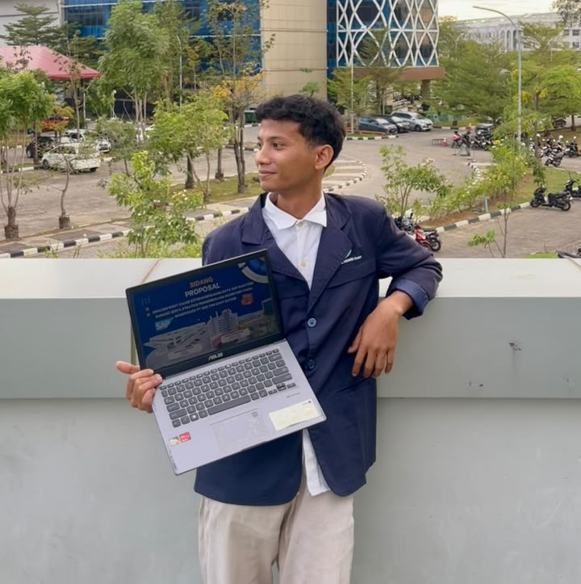
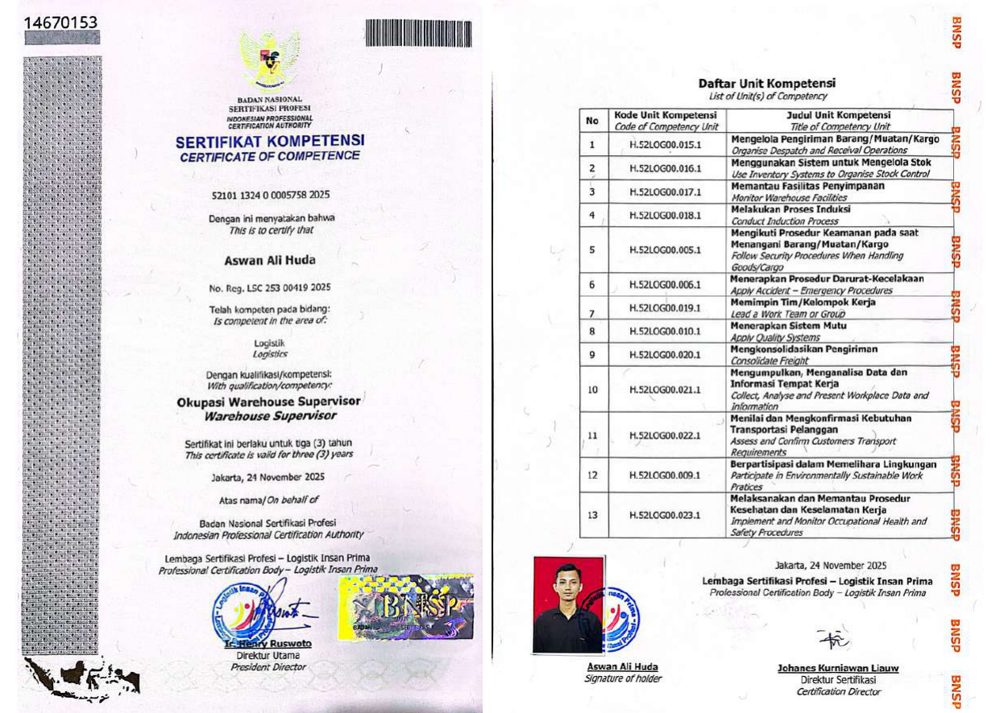
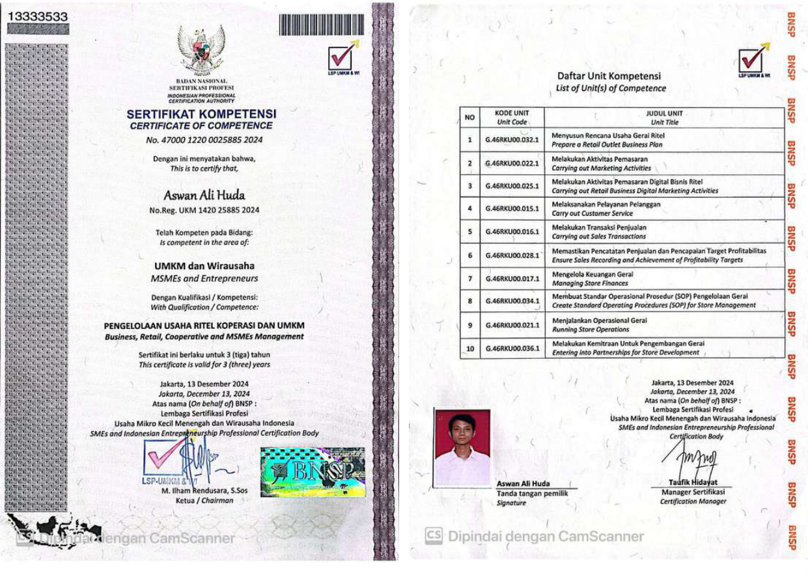
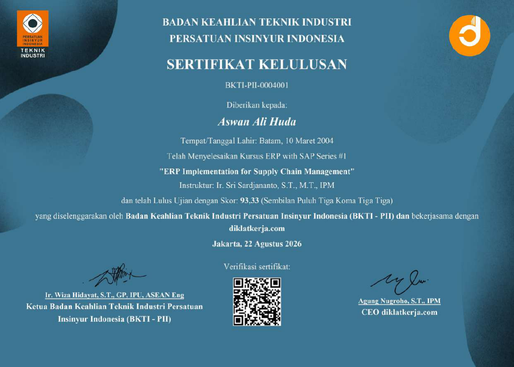
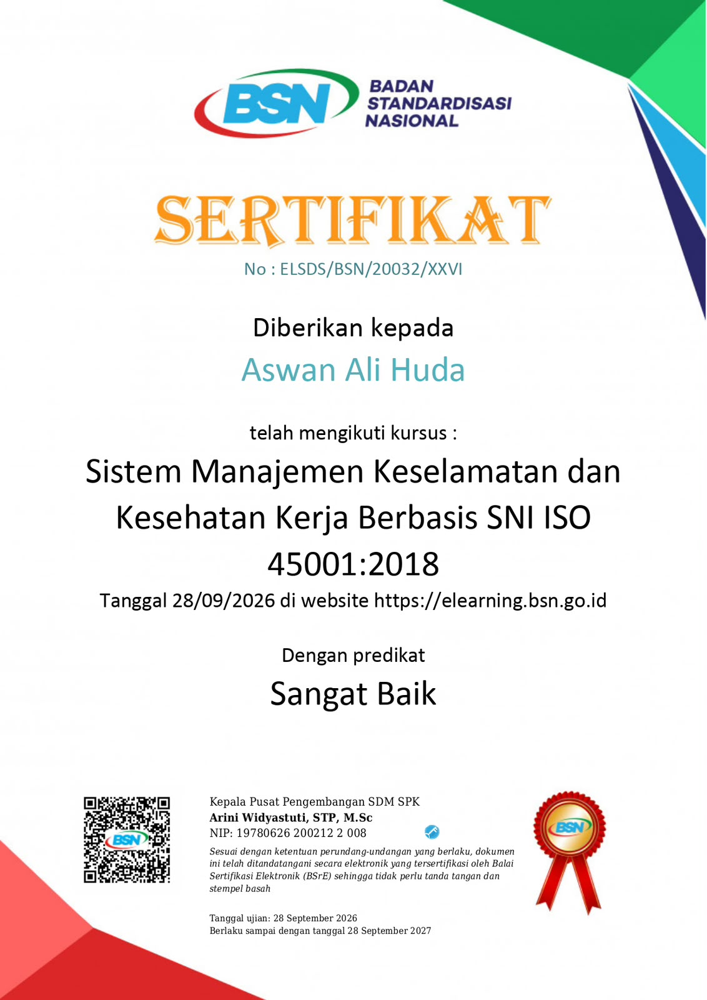
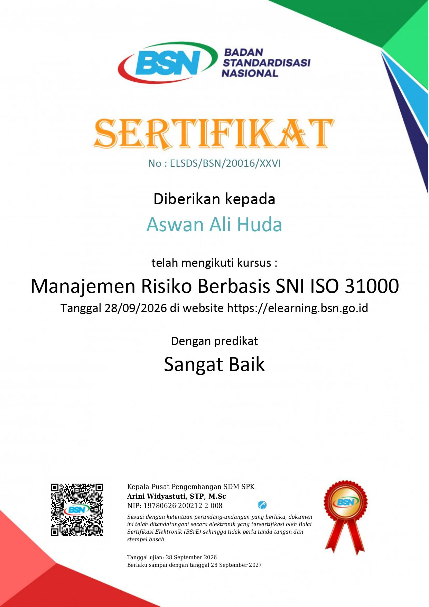
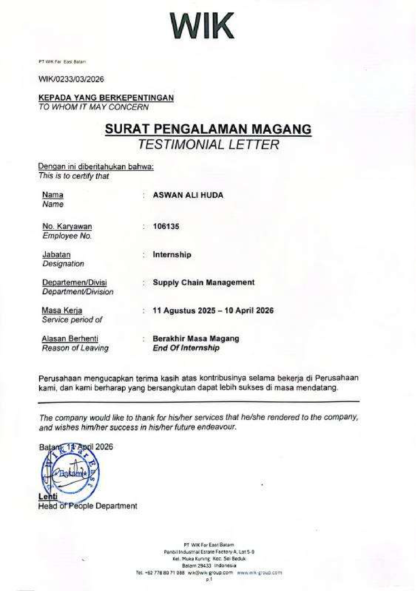
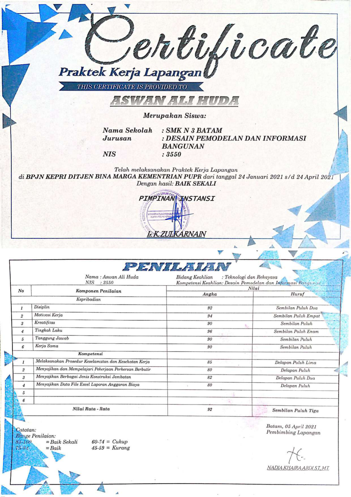

ASWAN ALI HUDA
D4 International Trade Logistics graduate with practical exposure in shipping documentation, warehouse operations, inventory control, logistics administration, procurement coordination, and operational process improvement.

WHO I AM
Profil terstruktur yang menguraikan fondasi akademis, paparan operasional di lapangan, kompetensi terverifikasi, dan arah spesialisasi karier.
BACKGROUND
Lulusan D4 Logistik Perdagangan Internasional, Jurusan Manajemen Bisnis di Politeknik Negeri Batam dengan IPK 3.62 / 4.00 (Predikat Cumlaude).
- Fondasi kuat regulasi kepabeanan & ekspor-impor
- Manajemen pergudangan & transportasi logistik
- Pemodelan operasional & analisis rantai pasok
EXPOSURE
Pengalaman magang industri selama 8 bulan di Departemen Supply Chain Management PT WIK Far East Batam (Agustus 2025 – April 2026).
- Administrasi dokumen impor (PIB & CEISA 4.0)
- Booking kontainer ekspor & koordinasi 3PL portal
- Cycle counting 4 area & stock opname 5 area
CAPABILITY
Tersertifikasi BNSP dalam Warehouse Supervision dan Pelatihan ERP SCM dari BKTI-PII dengan orientasi presisi data dan operasional.
- Verifikasi data SAP S/4HANA vs fisik gudang
- Penyusunan picking list & investigasi diskrepansi
- Koordinasi lintas fungsi gudang, vendor & shipping
CAREER DIRECTION
Membangun karier profesional yang solid di industri manufaktur dan logistik internasional dengan fokus operasional yang handal dan terukur.
- Shipping & Logistics Operation
- Warehouse Operations & Inventory Control
- Procurement & Purchasing Support
“Responsible, adaptable, detail-oriented, dan nyaman bekerja dalam koordinasi tim maupun lingkungan operasional lapangan berbasis data dan SOP.”
MY JOURNEY
Alur perkembangan pengalaman terstruktur dari praktik lapangan teknis, studi akademik sarjana terapan, riset efisiensi operasional gudang, hingga magang industri supply chain internasional.
Field Work Practice – Material Monitoring & Project Documentation
Memantau material konstruksi untuk memastikan kepatuhan terhadap spesifikasi teknis dan rencana anggaran proyek. Membantu penyusunan laporan anggaran biaya proyek menggunakan Microsoft Excel (analisis biaya material dan tenaga kerja), serta mengelola dokumentasi pada pemeliharaan Jembatan Barelang dan pelebaran jalan Trans Barelang.
D4 International Trade Logistics – Business Management
Mempelajari manajemen rantai pasok global, kepabeanan dan perpajakan internasional, operasional pergudangan, inventory control, shipping, pengadaan barang, serta sistem integrasi ERP. Aktif dalam organisasi kemahasiswaan KUAS Polibatam (Kepala Divisi Internal 2024 & Ketua Pelaksana Kaderisasi).
Warehouse Efficiency Analysis & Layout Optimization
Melakukan survei lapangan dan wawancara dengan staf gudang untuk mengumpulkan data inventaris, volume inbound/outbound, serta kebutuhan ruang. Menghitung kebutuhan ruang penyimpanan dan rasio throughput/space untuk merancang layout dedicated storage dengan jarak rectilinear, terbukti meningkatkan kapasitas penyimpanan sebesar 15% dan memangkas waktu pencarian barang sebesar 20%.
Procurement, Inventory & Sales Operations – Wirausaha Merdeka
Mengelola pengadaan bahan baku dan berhasil mereduksi biaya pembelian sebesar 15% melalui negosiasi langsung dengan pemasok. Menyusun Purchase Order (PO) serta laporan keuangan via Microsoft Excel, memantau pergerakan stok bahan baku, dan mengoordinasikan jadwal pengiriman pesanan pelanggan.
Domestic Cargo Handling System Development Feasibility Study
Menganalisis operasional penanganan kargo domestik dengan fokus pada efisiensi operasional, kesiapan infrastruktur, dan digitalisasi. Mengidentifikasi kendala manual handling serta keterbatasan pelacakan real-time, lalu merumuskan roadmap perbaikan bertahap meliputi manual stacker, SOP baru, barcode tracking, integrasi ERP, dan smart warehouse.
Supply Chain Management Internship
Terlibat aktif dalam operasional harian rantai pasok manufaktur multinasional: verifikasi 25–30 PIB & delivery list/bulan, booking kontainer ekspor produk Finished Goods pada portal 3PL, cycle counting di 4 area gudang, stock opname di 5 area, penyiapan picking list FG, koordinasi jadwal pengiriman, pembuatan video pelatihan C-TPAT, dan penyusunan Work Instruction pemuatan model baru.
Graduation & Career Entry
Lulus sebagai Sarjana Terapan Logistik (S.Tr.Log.) dengan predikat Cumlaude dan siap berkontribusi langsung pada operasional shipping, manajemen pergudangan, inventory control, atau administrasi pengadaan di perusahaan industri terkemuka.
SUPPLY CHAIN MANAGEMENT EXPERIENCE
Keterlibatan operasional nyata di PT WIK Far East Batam (Agustus 2025 – April 2026). Setiap proses dijabarkan menurut alur kerja: aktivitas operasional hingga kontribusi nilai riil.
Shipping Administration & Import Docs
Verifikasi kepatuhan dokumen pabean impor dan rekonsiliasi data pengiriman.
What I Did (Aktivitas Lapangan)
- Memproses dan memverifikasi rata-rata 25–30 dokumen PIB (Pemberitahuan Impor Barang) dan 2–5 dokumen Delivery List per bulan menggunakan SAP S/4HANA dan Microsoft Excel.
- Melakukan follow-up komunikasi via email perusahaan kepada vendor terkait data impor yang belum lengkap (tanggal izin impor, nomor PIB, invoice, BL/AWB, dan forwarder).
- Mendukung pemrosesan dokumen impor melalui sistem kepabeanan CEISA 4.0 dan memperbarui riwayat pengiriman (shipment history) di SAP setelah verifikasi dokumen internal.
Value / Contribution
Export Logistics Coordination
Pengurusan pesanan ekspor barang jadi (Finished Goods) dan integrasi portal 3PL.
What I Did (Aktivitas Lapangan)
- Membantu proses booking kontainer ekspor produk Finished Goods dengan memeriksa Sales Order, Purchase Order pelanggan, detail spesifikasi produk, pelabuhan tujuan, dan kuantitas pengiriman berdasarkan jadwal planner.
- Melakukan input dan submit data booking melalui portal logistik pihak ketiga (3PL) yang ditunjuk oleh pelanggan di bawah supervisi Shipping Specialist.
- Mengomunikasikan konfirmasi pemesanan kontainer ke vendor terkait untuk memastikan kelancaran kesiapan penjemputan dan kontainerisasi.
Value / Contribution
Warehouse Operations Support
Pemeriksaan akurasi stok fisik vs SAP/WMS dan kesiapan outbound pengiriman.
What I Did (Aktivitas Lapangan)
- Melakukan cycle counting rutin di 4 area penyimpanan gudang: supplier-supplied materials, molding production materials, slow-moving materials, dan finished goods.
- Memverifikasi kuantitas fisik dan lokasi rak terhadap catatan SAP dan WMS, mendokumentasikan selisih stok, merelokasi barang yang salah penempatan (mislocated), dan melapor ke supervisor.
- Mendukung pelaksanaan stock opname berkala bersama tim gudang di 5 area penyimpanan.
- Menyiapkan rata-rata 2–4 Finished Goods picking lists per hari saat volume shipment meningkat berdasarkan master data dan jadwal planner, serta membantu tim gudang memposisikan palet dan pemuatan kontainer.
Value / Contribution
Outbound Schedule Alignment
Sinkronisasi jadwal harian pengapalan antara tim shipping dan operasional gudang.
What I Did (Aktivitas Lapangan)
- Memperbarui jadwal pengiriman harian (daily shipping schedules) secara berkala berdasarkan update informasi terbaru dari Shipping Specialist.
- Mengomunikasikan perubahan jadwal muat dan keberangkatan kepada tim gudang untuk menyelaraskan kesiapan picking, staging, dan loading barang.
Value / Contribution
Affiliate Admin & SOP Improvement
Pengurusan pengiriman afiliasi, standar operasional, dan materi C-TPAT.
What I Did (Aktivitas Lapangan)
- Mendukung administrasi pengiriman entitas afiliasi dengan meninjau Shipping Request Forms, mengecek rute, metode pengiriman, detail material, verifikasi harga/pembayaran, dan penyiapan commercial invoice.
- Membuat video pelatihan standar keamanan rantai pasok C-TPAT (Customs-Trade Partnership Against Terrorism) dari konsep naskah, simulasi lapangan, perekaman hingga penyuntingan untuk materi training perusahaan.
- Menyusun Work Instruction (WI) pemuatan model Finished Goods baru di bawah arahan Shipping Specialist, mencakup identifikasi barang, sistem scanning, dokumentasi operasional, dan catatan pergerakan material.
- Berkontribusi dalam pengumpulan data, analisis kuantitas, dan dokumentasi proposal pengadaan aset operasional yang disiapkan oleh Warehouse Supervisor.
Value / Contribution
SELECTED PROJECTS
Implementasi metode analitis dan optimasi proses pada operasional pergudangan galangan kapal, studi kelayakan kargo bandara, pengadaan bahan baku, dan investigasi selisih stok sistem.
Warehouse Efficiency Analysis & Layout Optimization
Mengatasi inefisiensi tata letak ruang penyimpanan gudang material galangan kapal yang mengakibatkan waktu pencarian barang tinggi dan pemanfaatan kapasitas belum optimal.
Melakukan survei langsung dan wawancara dengan staf gudang untuk mencatat data inbound/outbound. Menghitung Throughput/Space Ratio dan jarak rectilinear untuk mendesain ulang tata letak gudang berbasis Dedicated Storage Method menggunakan AutoCAD 2D.
Berhasil mengurangi waktu pencarian barang (search time) sebesar 20% serta meningkatkan kapasitas penyimpanan efektif sebesar 15%.
Domestic Cargo Handling System Development
Mengkaji kelayakan transformasi operasional penanganan kargo domestik untuk meningkatkan efisiensi proses bongkar muat dan digitalisasi gudang bandara.
Mengumpulkan data primer melalui observasi lapangan langsung, wawancara terstruktur, dan review dokumen operasional. Menganalisis kendala ketergantungan manual handling, minimnya otomasi, belum adanya tracking real-time, dan potensi human error.
Menyusun roadmap perbaikan bertahap: implementasi manual stacker, standarisasi SOP penanganan, barcode tracking, integrasi modul ERP kargo, dan perancangan konsep smart warehouse.
Procurement, Inventory & Operational Supply
Mengelola siklus rantai pasok usaha kuliner mulai dari pembelian bahan baku kedelai, pengendalian stok, hingga pemenuhan permintaan pesanan pelanggan.
Melakukan negosiasi harga dan jadwal dengan beberapa supplier bahan baku, menerbitkan Purchase Order (PO) serta pencatatan arus keuangan via Microsoft Excel, serta memantau level minimum inventaris.
Berhasil menekan biaya pengadaan (purchasing cost) sebesar 15% melalui negosiasi vendor dan meraih nilai akhir transkrip 89.22 (Indeks A / 20 SKS).
Root Cause Analysis Ketidaksesuaian SAP-Fisik & Strategi Inventory Control
Meneliti akar penyebab terjadinya selisih (discrepancy) antara data pencatatan sistem SAP ERP dengan stok fisik aktual di gudang operasional industri manufaktur.
Menggunakan pendekatan Root Cause Analysis (Fishbone/5 Whys), audit siklus transaksi SAP, penelusuran proses penerimaan hingga picking list, di bawah bimbingan Jessica Olifia, S.Tr.Akun., M.Log.
Menghasilkan rekomendasi strategi pengendalian inventory presisi, mekanisme verifikasi sebelum posting sistem, dan standarisasi SOP pergerakan material gudang.
CAPABILITIES
Kumpulan kompetensi fungsional yang terbagi dalam 4 pilar utama bidang rantai pasok dan logistik terapan.
Shipping & Logistics
Warehouse & Inventory
Data & System
Procurement & Admin
TOOLS & CERTIFICATIONS
Daftar perangkat lunak operasional, penguasaan teknis logistik, dan sertifikasi keahlian terverifikasi resmi oleh lembaga nasional dan asosiasi profesi.
SYSTEM & SOFTWARE
LOGISTICS KNOWLEDGE
OFFICIAL CERTIFICATIONS & CREDENTIALS

Okupasi Warehouse Supervisor

Pengelolaan Usaha Ritel Koperasi dan UMKM

ERP Implementation for Supply Chain Management
ERP Implementation for Supply Chain Management

Sistem Manajemen Keselamatan dan Kesehatan Kerja Berbasis SNI ISO 45001:2018

Manajemen Risiko Berbasis SNI ISO 31000

Surat Pengalaman Magang Industri SCM

Praktek Kerja Lapangan – BPJN KEPRI
MY WORK APPROACH
Siklus alur kerja operasional terstruktur yang saya terapkan dalam setiap penugasan supply chain untuk memastikan akurasi data, ketepatan waktu, dan koordinasi yang andal.
UNDERSTAND
Memahami ruang lingkup pekerjaan, parameter order, jadwal pengiriman, dan standar SOP yang berlaku.
VERIFY
Memvalidasi dokumen (PIB, BL, PO) serta mencocokkan stok fisik terhadap catatan sistem SAP/WMS.
COORDINATE
Menyelaraskan informasi jadwal antara tim shipping, gudang, vendor 3PL, dan pihak terkait.
EXECUTE
Melaksanakan booking kontainer, picking list, cycle counting, dan pemuatan barang sesuai jadwal.
REPORT
Mendokumentasikan hasil aktual, melaporkan selisih stok ke supervisor, dan mencatat riwayat sistem.
IMPROVE
Mengidentifikasi hambatan proses dan berkontribusi menyusun instruksi kerja (WI) atau optimasi tata letak.
WHAT I BRING
5 nilai profesional nyata yang dibangun berdasarkan bukti pengalaman kerja lapangan, latar belakang akademik sarjana terapan, dan sertifikasi resmi.
OPERATIONAL EXPOSURE
Pengalaman nyata lintas aktivitas administrasi pengapalan (shipping), pemuatan kontainer ekspor, operasional gudang, hingga cycle counting di lingkungan manufaktur berstandar multinasional.
DATA & SYSTEM AWARENESS
Kemampuan dan kebiasaan memvalidasi informasi operasional fisik secara cermat terhadap pencatatan sistem ERP SAP S/4HANA, WMS, dan portal kepabeanan CEISA 4.0.
CROSS-FUNCTION COORDINATION
Paparan langsung dalam menjembatani komunikasi operasional antara tim gudang, spesialis shipping, vendor forwarder, penyedia jasa 3PL, dan entitas afiliasi.
IMPROVEMENT MINDSET
Keterlibatan dalam proyek akademik dan operasional yang fokus pada efisiensi proses nyata: perancangan layout gudang galangan kapal (-20% waktu pencarian), SOP, dan materi C-TPAT.
LOGISTICS FOUNDATION
Latar belakang sarjana terapan D4 Logistik Perdagangan Internasional dengan IPK 3.62 didukung sertifikasi kompetensi nasional BNSP Warehouse Supervisor dan pelatihan profesional BKTI-PII.
WHERE I AM HEADING
Konvergensi pengalaman operasional dan kesiapan karier untuk berkontribusi secara nyata pada rantai pasok industri modern.
"Sebagai lulusan D4 Logistik Perdagangan Internasional dengan pengalaman operasional langsung di PT WIK Far East Batam serta sertifikasi BNSP Warehouse Supervisor, saya bertekad membangun karier yang berkelanjutan di bidang Supply Chain & Logistics. Saya siap membawa kedisiplinan, ketelitian rekonsiliasi data, pemahaman kepabeanan, dan etos kerja yang berorientasi pada efisiensi operasional bagi perusahaan Anda."